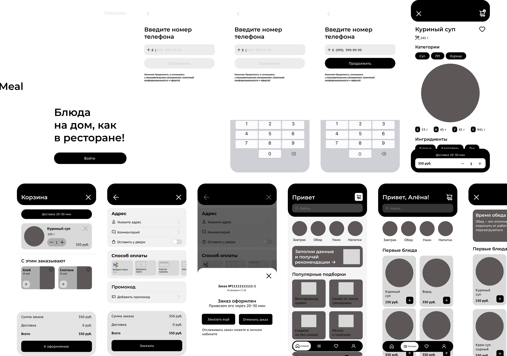
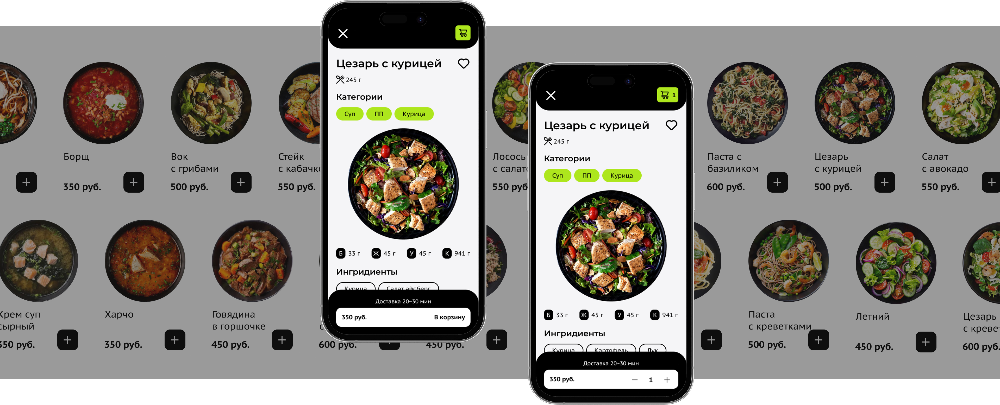

Исследовать задачу
Персоны и CJM описывают мотивацию, барьеры и ожидания на разных этапах заказа.
Мобильное приложение доставки еды
Сервис доставки готовой еды.
От выбора блюда до оформленного заказа.
UX/UI-дизайн
Спроектировать современный и понятный интерфейс заказа готовой еды и проработать сценарий покупки одного блюда. Фокус кейса — путь от выбора до подтверждения, с вниманием к составу, оплате и условиям доставки.
Персоны и CJM описывают мотивацию, барьеры и ожидания на разных этапах заказа.
User Flow и макеты экранов покупки одного блюда.
Каталог, карточка блюда, корзина, оформление и подтверждение заказа в единой визуальной системе.
Две персоны описывают близкую потребность — тратить меньше усилий на питание, — но разные критерии доверия к сервису.
Анна / 32 / Фитнес-тренер
Важны состав, калорийность и подходящие блюда. Есть опасение, что за полезной едой окажутся тяжёлые соусы и жареные продукты. Питание должно вписываться в тренировки.
Критерий выбораДостаточно информации о блюде до добавления в корзину.
Егор / 44 / Предприниматель
Хочет упростить питание, но не ориентируется в калориях. Ему нужны понятные подборки и уверенность в том, что еда приедет вовремя, тёплой и вкусной.
Критерий выбораПонятная навигация и предсказуемые условия заказа.
Карта пути охватывает подготовку к заказу, оформление и доставку. Она показывает, где пользователю приходится сравнивать сервисы, ждать или сомневаться в качестве.
В CJM поиск сервиса описан как длительный этап. Для интерфейса это основание показывать категории и подборки по запросу — например, лёгкие блюда или еду после тренировки.
Повторный пользователь уже знает, куда нажимать. Важны быстрый доступ к блюдам, понятные дополнения, адрес и видимая итоговая сумма.
В карте отмечено предпочтение конкретного времени и недоверие к обращению с упаковкой. Это одновременно задача интерфейса и процесса доставки.
«Предпочитаю видеть конкретное число, а не расплывчатое “в течение часа”».
Персоны и карта пути стали основой требований к выбору и оформлению.
В макете блюда есть вес, категории, ингредиенты и показатели пищевой ценности. Пользователь может оценить блюдо до покупки.
На главной доступны поиск, категории по приёму пищи и тематические подборки. В каталоге блюда сгруппированы по типам.
Корзина ведёт к адресу, комментарию, способу оплаты и итоговой сумме. После оформления показывается подтверждение.
В макетах показано «20–30 минут», а не точное время прибытия. Это частичный ответ на барьер CJM; точность прогноза требует дальнейшей работы.
Интерфейс сам по себе не исправляет обращение с пакетом. Нужны правила упаковки и доставки, контроль качества и обратная связь. В проекте они не подтверждены как внедрённые.
Основной сценарий: открыть приложение, войти или пропустить регистрацию, выбрать блюдо, добавить его в корзину, указать адрес и способ оплаты, оформить заказ. В схеме предусмотрена развилка оплаты картой или наличными.

Каждый экран поддерживает конкретный шаг сценария.
Можно войти по телефону или пропустить регистрацию. Это позволяет сначала посмотреть предложение.
Поиск помогает найти конкретное блюдо, категории — выбрать приём пищи, подборки — начать с предпочтений. Предложение заполнить данные объясняет идею персональных рекомендаций.

Вес, категории, ингредиенты и пищевая ценность собраны рядом с блюдом. Важно проверить, достаточно ли этой информации для решения.
Видны количество, дополнительные позиции, доставка и сумма. Адрес, комментарий, оплата и промокод собраны в следующем шаге.
Финальный экран сообщает, что заказ оформлен, показывает номер и интервал доставки; доступны повторный заказ и отмена.
Светлый фон и чёрные элементы задают контраст, лаймовый выделяет основные акценты. Фотографии еды помогают выбирать, а линейные персонажи поддерживают узнаваемость. Визуальная система включает Montserrat и PT Sans Caption, четырёхколоночную сетку с полями 24 px и межколонником 20 px.
Результат проекта — спроектированный путь покупки одного блюда, User Flow, макеты интерфейса. Следующий этап — проверить сценарий с пользователями.
Может ли человек подобрать блюдо по своим ограничениям и найти состав? Наблюдать за действиями, ошибками и вопросами.
Может ли пользователь без подсказок задать адрес, понять способ оплаты и итоговую стоимость? Фиксировать успешность и затруднения.
Понятен ли интервал прибытия и что происходит после оформления? Отдельно исследовать доверие к упаковке и качество реального сервиса.